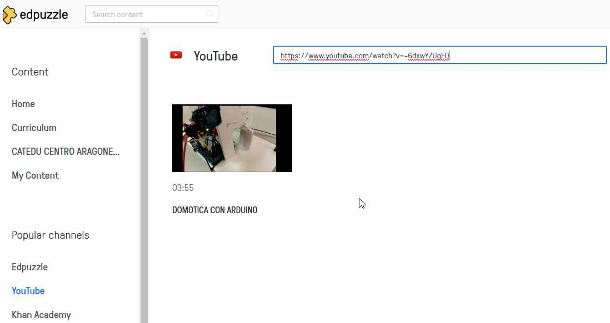
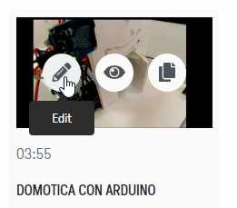
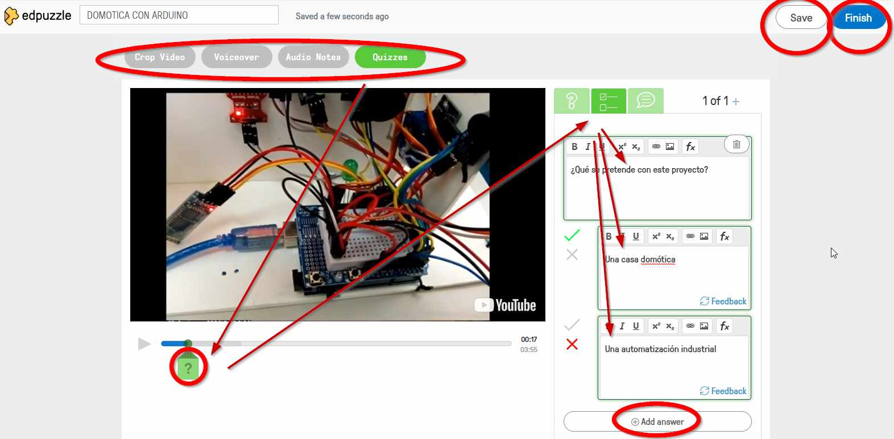
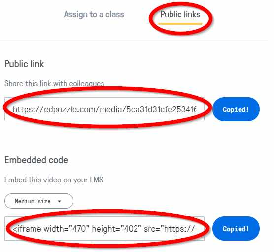
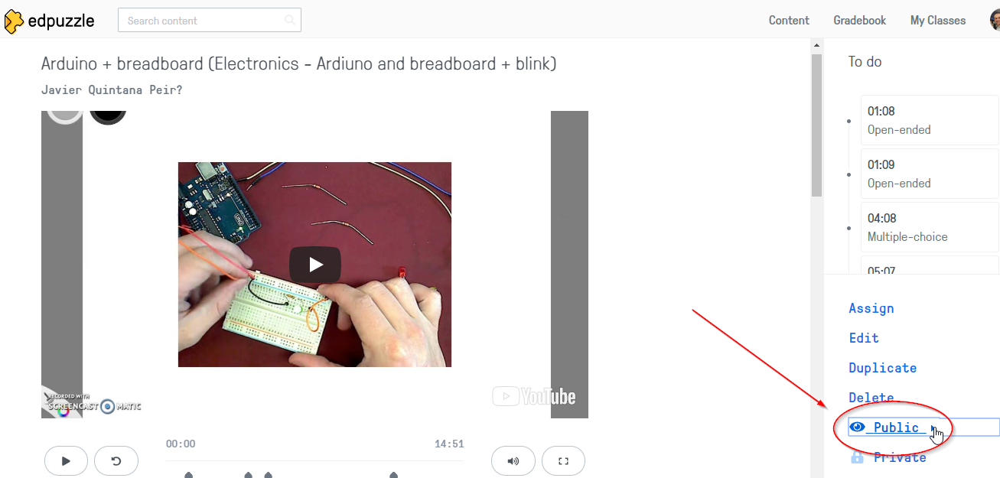

EDPuzzle
Mira la diferencia entre este vídeo...
Y este otro..
¿Qué te ha parecido?
Parece una chorrada, pero se ponen dos preguntas en un vídeo, y sin querer se presta más atención
¿Cómo se hace?
Existen varias páginas para insertar preguntas interactivas en los vídeos, Educanon, EDPuzzle.. nosotros hemos elegido esta última.
1.- Vamos a https://edpuzzle.com y nos registramos 2.- Vamos a Youtube https://www.youtube.com 3.- Elegimos un vídeo por ejemplo va a ser este https://www.youtube.com/watch?v=-6dxwYZUgFQ 3.- Volvemos a https://edpuzzle.com y vamos a Youtube 4.- Ponemos en el cuadro de búsqueda el vídeo que hemos elegido

También podemos subir un vídeo a EdPuzzle en Mi contenido - Crear contenido, pero recomendamos hacerlo siempre dede Youtube: Subir el vídeo nuestro en Youtube y en EdPuzzle elegirlo
5.- Pinchamos en el vídeo y le damos a editar en el lápiz:

6.- Elegimos si queremos insertar una nota de audio, una pregunta abierta, una nota escrita... aquí por ejemplo se inserta una pregunta de tipo test: ¡¡espero que sepas cual es la respuesta correcta !!!

7.- Al pulsar grabar y después al pulsar finalizar nos sale un diálogo donde nos sale el link del vídeo y el código embebido

Aquí tienes el link. https://edpuzzle.com/media/5ca31d31cfe253416dd3bd42
IMPORTANTE
Hazlo PUBLICO PUES DE OTRO MODO OBLIGAS AL USUARIO A REGISTRARSE PARA VERLO

y aquí está embebido:
Este mismo tutorial pero en flash:
Míra cómo se hace en esta página (Flash SWF)
Si no lo ves bien, aquí lo tienes en (PDF)
IMPORTANTE PARA USUARIOS DE WORDPRESS
Si tu blog es un WordPress no se puede tal y como dice aquí
If you're a WordPress user, you can share the assignment with a link which will redirect your students to Edpuzzle (the embed feature isn't currently supported).
O sea no está soportado, que pongas un enlace que redirija a tus estudiantes al vídeo de EdPuzzle

Aprendizaje colaborativo con blog por varios autores bajo licencia Creative Commons Reconocimiento-NoComercial-CompartirIgual 4.0 Internacional License.